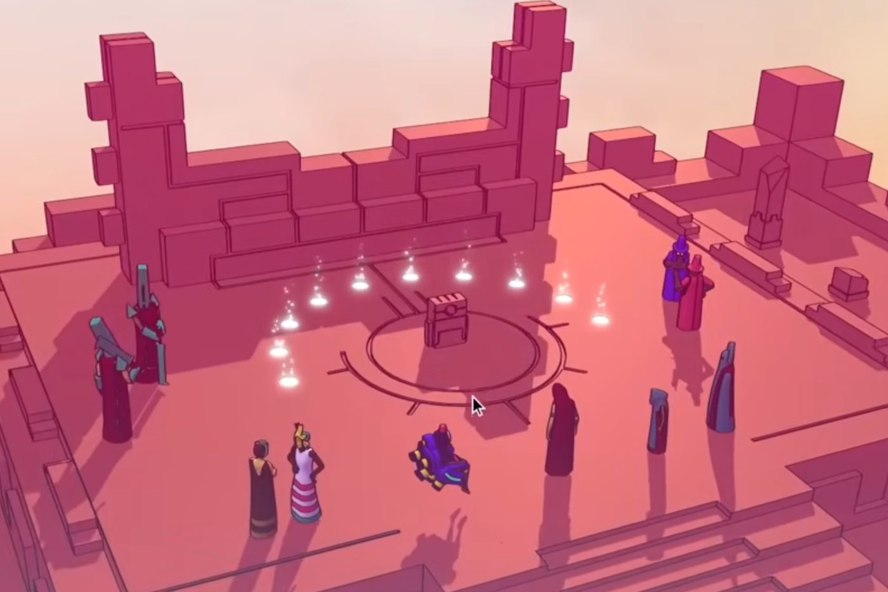
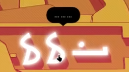
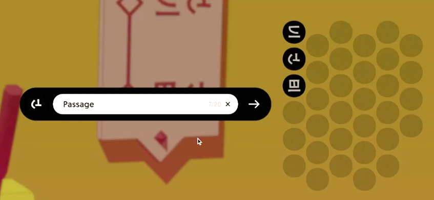
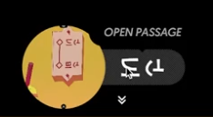
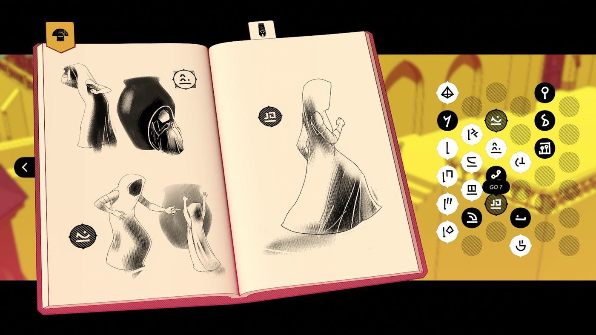
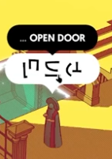
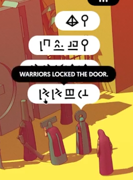
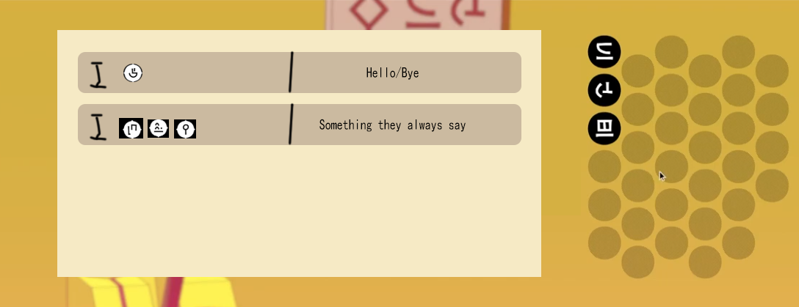
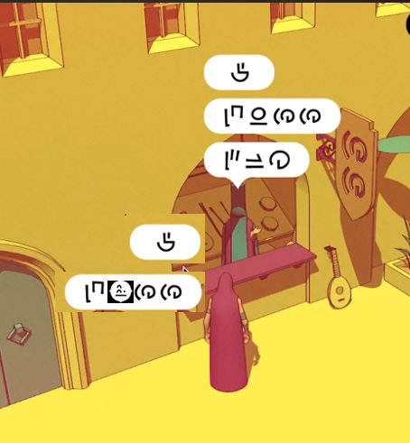
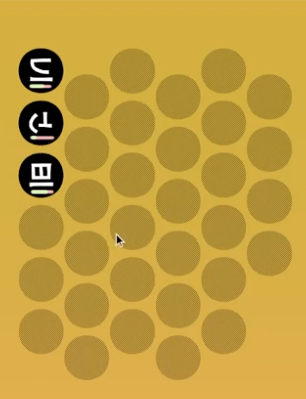

Design Analysis · Individual course assignment
Players are not just listeners and observers of a language. They speak it too.
Chants of Sennaar is a puzzle adventure game centered on deciphering fictional written languages: explore, observe and listen, decipher 5 unique fictional scripts, and unite the divided peoples of the Tower of Babel.
Players walk through the Tower of Babel, observing, listening and learning the languages of its many peoples in search of a path upward. Ultimately, they master every language, bridge the divides between civilizations, rebuild trust across cultures, and reunite the tower as one.

The core mechanic of the game is a system of language guessing and verification. As players read within context-rich environments, they form hypotheses about the meaning of words and the structure of sentences. By cross-referencing the same symbols across different conversations, they gradually confirm their interpretations, until the meaning of every character and every sentence becomes clear.
To support this process, the game provides players with a dedicated notebook system.






Not just a listener and observer of language, but also a speaker.
In my redesigned system, players are not only observers and listeners of language; they are also active users of it. Players can engage in direct exchanges with NPCs: responding to greetings, attempting to answer questions and asking their own, building their understanding of words and sentence structures through use.
The notebook is no longer limited to recording guesses for individual symbols. Players can also log custom phrases and sentence patterns, such as a common greeting, a line like "I'm looking for the way up" that recurs often in dialogue, or a sentence structure used to ask questions. Alongside each entry, players can record their current interpretation and update it as their understanding develops.


In the original game, NPCs essentially talk at you without expecting a response. In the redesigned system, players can actively reply.
With the new conversation-based verification in place, the original notebook verification mechanic is no longer necessary, though the translation system itself remains valuable and can be kept. To encourage players to engage more actively in dialogue, each symbol has its own decipherment progress: once a player successfully uses a symbol in conversation a set number of times, it is officially recorded as deciphered.

| Original | Redesign | |
|---|---|---|
| Progression | Observe, search, decipher: progress by reading the environment | Conversation drives progress; NPCs wait for the player to speak first |
| The player's role | A silent decipherer: the player decodes the language, but no one speaks to them | An active participant: starts conversations, earns trust, learns how others see them |
| Thematic feeling | Loneliness: the player witnesses connection but isn't part of it | Participation: connection is something you take part in, not something you watch |
This shift makes social interaction the primary mode of gameplay, which calls for broader changes to the overall design. In the original game, players advance mainly by reading environmental information, locating items, and using those items to unlock further clues. In the redesigned version, the primary driver of progression is conversation. Some information is no longer stated directly but embedded in dialogue; NPCs wait for you to speak first; key NPCs won't simply hand you access to the next area, and you must engage them appropriately before they lead you forward.
This change also carries a different thematic weight. The original game has a quality of loneliness to it. You read every piece of text in the world and decode language on behalf of its peoples, yet you never quite feel like one of them. Almost no one speaks to you as a person. You are an outsider, moved by a story of connection that you yourself are not part of.
The redesigned system expresses the theme of human connection more directly. The player character enters this world as a stranger, earns trust gradually, speaks with each person, receives responses, and comes to understand how they are perceived. Connection is no longer something you observe; it is something you participate in.
Looking at it from the other side: why did the original designers go with the system they did?
The verification system gives players a way out even when they're not fully sure about a symbol. They can make a guess, and the game tells them if they're right. It's a safety net, and it keeps the game moving. A wrong guess won't spiral into a broken understanding of the whole story, and if players are completely stuck, they can always try every option on the verification page. It's tedious enough that no one wants to, but it's there.
A conversation-based system means every NPC needs something to ask you and a scripted response to whatever you might say back. That's a lot of work. The original system sidesteps all of that: verification happens on its own isolated screen, and NPCs just need to give you clues. They don't need to talk to you. It's a practical call.
The whole point is for players to feel the divide between the peoples of the Tower, and that feeling should be uncomfortable. Why won't they learn each other's languages? Why are they so cold, so closed off? Because they've stopped trying to understand one another; each group just pushes forward with its own agenda. The player character exists to reconnect them, but walks through a world that has long given up on connection. That isolation isn't a design flaw. It's the experience the game is trying to create.
Screenshots are from Chants of Sennaar and are used for design analysis only.